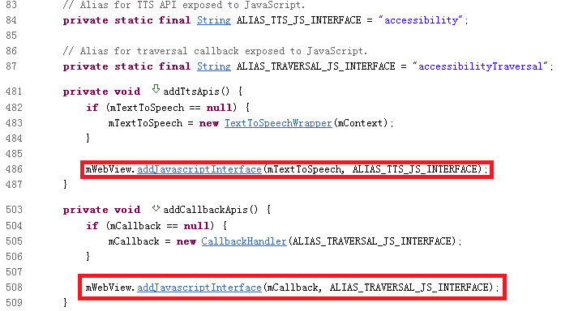
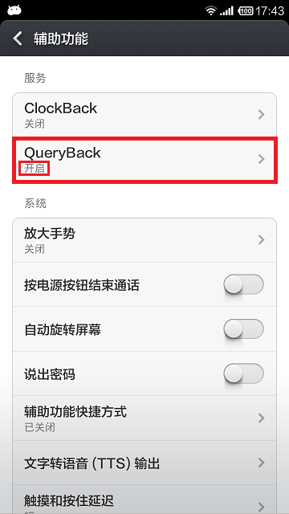
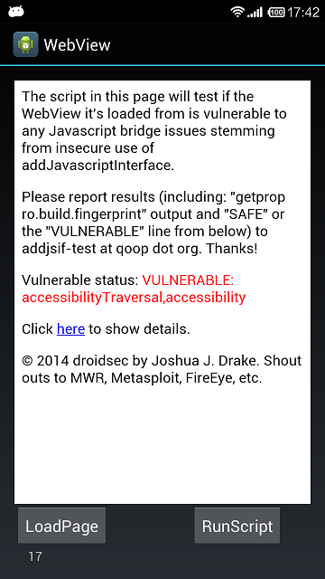

- 漏洞类型：远程执行
- 威胁等级：中
- 漏洞来源：Daoyuan Wu, Rocky Chang
- 影响版本： Android 4.3 Android 4.2 Android 4.1 Android 4.0 Android 2.3 Android 2.2 Android 2.1
漏洞描述
近日，香港理工大学的研究人员Daoyuan Wu和Rocky Chang [1]发现了一组新的Android WebView中addJavascriptInterface API引起的远程代码执行漏洞。当用户开启了手机设置中辅助功能里的任意一项服务时，该漏洞就会被触发。
Android WebView中addJavascriptInterface API 引起的远程代码执行漏洞由来已久，最早被公布是CVE-2012-6636，描述了WebView中addJavascriptInterface API 会引起远程代码执行漏洞，之后的CVE-2013-4710是针对某些特定机型会存在addJavascriptInterface API 引起的远程代码执行漏洞。而最近的一次关于addJavascriptInterface API的漏洞公布是CVE-2014-1939，此漏洞公布了一个可利用的Java Object searchBoxJavaBridge_，此漏洞存在于Android 4.4 之前版本的java/android/webkit/BrowserFrame.java 代码中。而此次CVE-2014-7224发现的是两个新的addJavascriptInterface API 引起的可被利用的 Java Object。
根据 android/webkit/AccessibilityInjector.java [2]代码中的介绍，发现当系统辅助功能中的任意一项服务被开启后，所有的WebView都会被加入两个JS objects，分别为是accessibility和accessibilityTraversal。如果APP使用了系统WebView的应用，并且设置了setJavaScriptEnabled()，那么恶意攻击者就可以使用accessibility和accessibilityTraversal这两个Java Bridge来执行远程攻击代码。而不同的Android 系统版本的可被攻击性是不一样的。由于Google 从API Level 17 （含）也就是Android4.2 开始，对于JavaScript代码通过addJavascriptInterface添加的java 代码的调用做出了限制，只有public并且声明了@JavascriptInterface的方法才可以被JavaScript代码调用。所以理论上在Android4.1（含）之前的版本上此漏洞会更容易被利用且有更高的危害。但是经过测试发现，有些手机即使系统版本是4.2，但是仍然通过利用此漏洞，在JavaScript中调用getClass()方法。下面的图3就是在红米1STD上运行测试程序的结果，此手机的Android版本是4.2.2。

图1. AccessibilityInjector.java 部分代码

图2. 设置 --> 辅助功能 图3.Demo程序WebWiew加载检测页面
| 机型 | Android 版本 | 是否存在漏洞 |
|---|---|---|
| 三星S3 | 4.1.2 | 存在，易利用 |
| 三星Note2 | 4.1.1 | 存在，易利用 |
| 三星Note3 | 4.3 | 存在，不易利用 |
| 小米2s | 4.1.1 | 存在，易利用 |
| 红米1s | 4.2.2 | 存在，易利用 |
| OPPO N1T | 4.2.2 | 存在，不易利用 |
表1 测试数据（易利用：暴露全部方法；不易利用：暴露部分特定方法）
测试方法
如果手机系统版本低于（不含）4.4，而且开启了系统辅助功能中的某一项服务就有可能受到此威胁。可以在APP中打开一个WebView addJavascriptInterface漏洞“检测页面”[4]，检测当前是否存在此漏洞。
解决方案
对于用户，如果手机系统的版本低于（不含）4.4，那么到系统的 设置 --> 辅助功能 中查看是否有开启的服务，如果没有必要则关闭所有服务
对于APP开发者，如果使用了WebView，那么使用
WebView.removeJavascriptInterface(String name)API，显示的移除accessibility和accessibilityTraversal
参考资料
[1] https://daoyuan14.github.io/news/newattackvector.html
[3] http://developer.android.com/reference/android/webkit/WebView.html